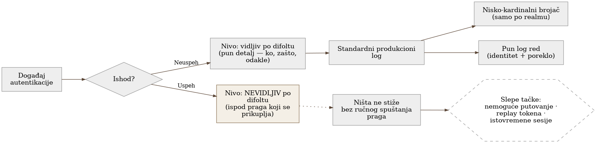
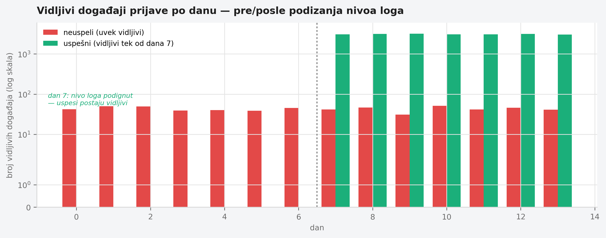

Poglavlje 20 — Autentikacija i IAM (sistem tipa Keycloak)
Obezbeđenje u zgradi vodi urednu evidenciju svakog neuspelog pokušaja ulaska — kartica koja ne radi, greška u kodu na vratima, netačan PIN se sve beleži, sa vremenom, lokacijom, imenom kartice koja je pokušala. Ta evidencija je opsežna, pretražljiva, i svaki neuspeh se odmah primeti. Ali ista ta portirnica često vodi mnogo tanju evidenciju uspešnih ulazaka — "kartica X je prošla u 08:14" i ništa više, bez beleške odakle je kartica tog dana stigla, da li je ista kartica "prošla" i na drugom ulazu deset minuta ranije, da li je ta kartica ikad ranije ušla u ovo vreme dana. Ako neko ukrade karticu i uđe njome normalno, portir to nikad neće primetiti u evidenciji — ne zato što je evidencija loša, nego zato što je dizajnirana da hvata neuspeh, ne da razlikuje "uspeh koji izgleda normalno" od "uspeh koji izgleda sumnjivo." Pola bezbednosnih pitanja koja portirnica treba da odgovori — da li je ova osoba stvarno ta za koju se predstavlja — ne mogu se odgovoriti dok se ne popravi upravo ta asimetrija.
20.1 Pitanje na koje ovo poglavlje odgovara
Sistem za autentikaciju i upravljanje identitetom generiše telemetriju gotovo isključivo o onome što nije uspelo. Šta se dešava kada su pitanja koja tim treba da odgovori zapravo o uspešnim prijavama — koje od njih su sumnjive, koje dolaze sa nemogućih putanja, koje se ponavljaju previše puta istovremeno — a signal za to jednostavno ne postoji po difoltu?
20.2 Kako je to urađeno — praktičan pregled
Infrastrukturno ograničenje koje mora biti rešeno pre bilo kog signala
Pre nego što se bilo koja telemetrija uopšte može prikupiti, sistem mora biti pokrenut u optimizovanom, produkcionom režimu — a taj režim ima ograničenje koje je implementacija otkrila kroz stvaran neuspeli raspored, ne kroz čitanje dokumentacije unapred: određena klasa konfiguracionih opcija mora biti fiksirana u trenutku građenja slike kontejnera, ne kasnije, kroz promenljivu okruženja u trenutku pokretanja. Pokušaj da se takva opcija postavi kao promenljiva okruženja u vreme pokretanja ne rezultira upozorenjem — rezultira padom kontejnera pri startu. Praktična posledica: bilo koja opcija koja utiče na to koje događaje sistem uopšte ume da emituje mora biti ispečena u sliku unapred, što svaku izmenu obrasca logovanja pretvara u novi build i redeploy, ne u brzu promenu konfiguracije.
Asimetrija otkrivena čitanjem podrazumevanih nivoa logovanja
Implementacija je otkrila centralni nalaz ovog poglavlja ne kroz incident, nego kroz sistematičan pregled podrazumevanih nivoa logovanja za svaki tip događaja autentikacije: neuspeli pokušaj prijave se po difoltu beleži na nivou koji je vidljiv u standardnom produkcionom logu, sa punim detaljem (korisnik, razlog neuspeha, poreklo). Uspešna prijava se po difoltu beleži na nivou koji je u standardnoj konfiguraciji nevidljiv — ispod praga koji se obično prikuplja. Posledica je direktna: bilo koje bezbednosno pitanje koje zahteva poređenje uspešnih prijava jedne sa drugom — "da li se ovaj korisnik upravo prijavio sa dve geografski udaljene lokacije u razmaku od nekoliko minuta," "da li isti token stiže sa dva različita klijenta istovremeno" — jednostavno nema ulazne podatke dok se ovaj podrazumevani nivo eksplicitno ne podigne.
Dva različita oblika signala za dva različita tipa pitanja
Popravka nije bila "podignuti sve na najviši nivo detalja" — to bi napravilo eksploziju kardinalnosti bez potrebe, jer većina pitanja o bezbednosti su agregatna, ne pojedinačna. Implementacija je zadržala dva paralelna oblika signala, namenjena dva različita tipa pitanja:
- Namerno niska kardinalnost u metrikama — brojači uspešnih i neuspelih prijava označeni samo po realmu (logičkoj celini korisnika), bez identiteta pojedinačnog korisnika kao oznake. Ovo odgovara na pitanja tipa "da li stopa neuspelih prijava upravo skočila" — agregatno, jeftino, bez rizika od kardinalnosti koja raste sa svakim novim korisnikom.
- Pun detalj u log liniji — svaki događaj, uključujući sada i uspešne prijave na podignutom nivou, nosi identitet korisnika, poreklo, i vremenski žig u samom tekstu loga, pretraživ naknadno. Ovo odgovara na pitanja tipa "koji su tačno bili poslednji pokušaji prijave za ovog konkretnog korisnika" — forenzičko, po zahtevu, ne agregatno.
Ova podela — brojač za "da li se nešto menja," log red za "šta se tačno dogodilo ovom konkretnom identitetu" — je namerna arhitekturna odluka, ne kompromis: rešava dva različita pitanja različitim oblicima podataka, umesto da forsira jedan oblik da odgovori na oba.
Konkretni bezbednosni signali izgrađeni na podignutom nivou
Tek kad je uspešna prijava postala vidljiva u standardnom toku logova, implementacija je mogla izgraditi konkretne upite za obrasce preuzimanja naloga: poređenje geografske lokacije trenutne uspešne prijave sa poslednjom poznatom lokacijom istog korisnika u kratkom vremenskom prozoru (nemoguće putovanje), otkrivanje istog tokena korišćenog sa dva različita klijenta ili IP adrese u preklapajućem vremenskom periodu (mogući replay), i otkrivanje neobično velikog broja istovremeno aktivnih sesija za jedan identitet. Nijedan od ova tri upita nije bio moguć pre popravke asimetrije — ne zato što je logika upita bila komplikovana, nego zato što ulazni podaci prosto nisu postojali.


20.3 Analitički deo — poznata klasa gapa, retko formalno imenovana
Zvanične smernice za logovanje traže oba ishoda podjednako
Zvanična bezbednosna smernica za logovanje eksplicitno navodi da se "uspesi i neuspesi autentikacije" moraju uvek beležiti podjednako, navodeći neuspele pokušaje kao rani indikator napada baziranih na kredencijalima — ali podjednako tražeći i uspešne događaje kao deo minimalne šeme (kad, gde, ko, šta, i ishod sa razlogom). Zanimljivo, šira bezbednosna smernica o propustima u logovanju eksplicitno imenuje suprotnu asimetriju kao poznat anti-obrazac — "beleže se samo uspešne prijave, ne i neuspele" — što znači da je pravac ove konkretne asimetrije (neuspeh vidljiv, uspeh nevidljiv) manje uobičajen u formalnoj literaturi, ali jednako štetan kada se dogodi, jer standardna smernica traži simetriju, ne bilo koji konkretan pravac asimetrije.
Nemoguće putovanje kao dobro dokumentovana, ali retko implementirana tehnika
Dobavljači identitetskih sistema dokumentuju otkrivanje nemogućeg putovanja kao standardnu tehniku: poređenje geografske lokacije trenutnog pokušaja prijave sa vremenom i lokacijom prethodnog, uz proveru da li je fizičko putovanje između te dve lokacije u tom vremenskom razmaku uopšte moguće. Minimalni ulazni podaci koje ova tehnika zahteva su tačno ono što je asimetrija u ovoj implementaciji blokirala: geografska lokacija izvedena iz IP adrese, vremenski žig, i trajno sačuvan zapis lokacije prethodne uspešne sesije. Bez pouzdanog, trajnog zapisa uspešnih prijava, ova tehnika je nemoguća bez obzira koliko sofisticirana logika poređenja bila napisana.
Otkrivanje ponovne upotrebe tokena je slabije standardizovano
Za razliku od nemogućeg putovanja, otkrivanje ponovne upotrebe tokena i istovremenih sesija je slabije pokriveno formalnim standardima. Jedna šira bezbednosna smernica o upravljanju sesijama zauzima čak i suprotan stav od intuicije — eksplicitno navodi da automatsko blokiranje istovremenih sesija više nije preporučeno, jer u praksi "poslednji koji se prijavi pobeđuje," što je često baš napadač, i umesto blokiranja preporučuje se da korisnik sam može videti i prekinuti svoje aktivne sesije. Ne postoji formalni zahtev koji eksplicitno nalaže logovanje istovremenih sesija ili ponovljenih tokena kao telemetriju — ovo je stvarna, dokumentovano priznata praznina u standardima, ne samo u implementaciji, što znači da je odluka implementacije da sama izgradi ove upite iznad onoga što standard uopšte traži.
Sam sistem svojim podrazumevanim ponašanjem potvrđuje nalaz
Zvanična dokumentacija sistema za upravljanje identitetom koji implementacija koristi potvrđuje direktno: evidencija događaja korisnika nije po difoltu ni sačuvana ni prikazana, a od tipova događaja koji se uopšte beleže u standardni log, samo greška se beleži na nivou vidljivom po difoltu — uspešan događaj se beleži na nivou koji zahteva eksplicitno spuštanje praga da bi postao vidljiv. Ovo nije nusprodukt implementacije — ovo je podrazumevano ponašanje samog sistema, koje svaki tim koji ga koristi mora sam prepoznati i ispraviti, jer sistem to neće učiniti umesto njih.
Kontrafaktički scenario: šta ostaje slepo bez popravke
Zamislimo da je implementacija stala na "neuspele prijave se prate, alarmi rade" i nikad nije otvorila pitanje uspešnih događaja. Napadač koji dobije validne kredencijale — ne pogađanjem, nego krađom — nikad ne bi proizveo nijedan neuspeli pokušaj: svaka njegova prijava bi bila, tehnički, uspešna. Sistem koji prati samo neuspehe bi takav napad video identično kao potpuno legitimnog korisnika koji radi svoj posao — sve dok šteta ne postane vidljiva na neki drugi, mnogo skuplji način. Klasa napada koja najviše zavisi od kompromitovanih, ne pogrešnih, kredencijala bi ostala potpuno nevidljiva upravo zbog toga što je asimetrija ostavljena neispravljena.
Vratimo se na portirnicu s početka poglavlja. Evidencija neuspelih pokušaja je bila savršena od prvog dana — svaki loš PIN, svaka loša kartica je zabeležena. Ali portir koji stvarno hvata ukradenu karticu ne gleda listu neuspeha — gleda da li se ista kartica pojavila na dva ulaza u razmaku od dva minuta, ili da li kartica koja obično ulazi ujutru odjednom ulazi u ponoć. Da bi to uopšte mogao da vidi, evidencija uspešnih ulazaka mora biti podjednako detaljna kao evidencija neuspešnih — ne zato što je uspeh sumnjiv, nego zato što se unutar gomile uspeha krije onaj jedan koji to nije.
20.4 Skupljena pravila iz ovog poglavlja
- Proveri podrazumevane nivoe logovanja za uspešne i neuspele događaje autentikacije posebno — ne pretpostavljaj simetriju, mnogi sistemi po difoltu beleže samo neuspeh na vidljivom nivou.
- Drži dva paralelna oblika signala za bezbednosnu telemetriju: nisko- kardinalne brojače za agregatna pitanja ("da li stopa raste") i pune log redove sa identitetom za forenzička pitanja ("šta se tačno dogodilo ovom korisniku") — jedan oblik ne može efikasno odgovoriti na oba tipa pitanja.
- Znaj da klasa opcija koje utiču na to šta sistem uopšte ume da emituje može biti fiksirana u trenutku građenja slike, ne u trenutku pokretanja — proveri ovo pre nego što planiraš brzu izmenu kroz promenljivu okruženja.
- Ne oslanjaj se samo na formalne bezbednosne standarde da ti kažu šta da loguješ — otkrivanje ponovne upotrebe tokena i istovremenih sesija je slabo pokriveno standardima, što znači da odsustvo formalnog zahteva ne znači odsustvo stvarne potrebe.
- Pitaj se, za svaku klasu napada koja zavisi od kompromitovanih (ne pogrešnih) kredencijala: da li bi ta klasa napada ikad proizvela ijedan neuspeli pokušaj — ako ne, tvoj sistem koji prati samo neuspehe je za tu klasu napada potpuno slep.
20.5 Vežba za čitaoca
Proveri podrazumevani nivo logovanja za uspešnu prijavu u sistemu za autentikaciju koji tvoj tim koristi — ne za neuspelu, za uspešnu. Da li je taj nivo vidljiv u standardnom produkcionom logu, sa dovoljno detalja (identitet, poreklo, vreme) da bi se dva uspešna događaja mogla porediti jedan sa drugim? Ako nije, zapiši jedno konkretno bezbednosno pitanje koje tvoj tim trenutno ne može da odgovori zbog toga.
Izvori korišćeni u analitičkom delu
- OWASP Logging Cheat Sheet
- OWASP Top 10:2025 — A09 Security Logging and Alerting Failures
- OWASP ASVS 4.0 — V3 Session Management
- Microsoft Entra ID Protection — Risk Detections (impossible travel)
- Okta — Add a Velocity Behavior Detection
- Red Hat build of Keycloak — Configuring Auditing to Track Events